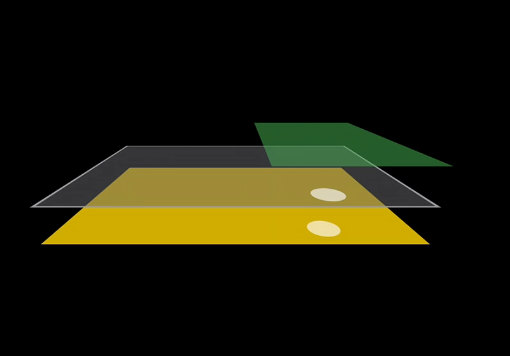
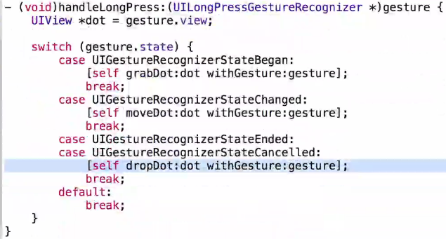
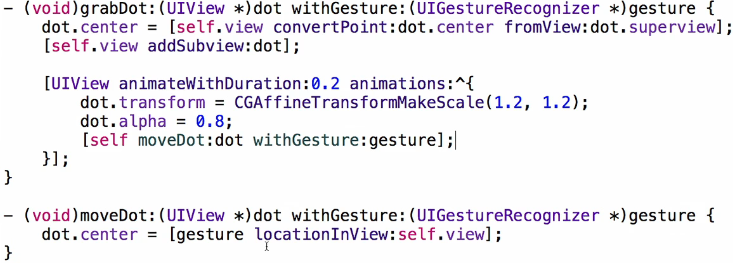
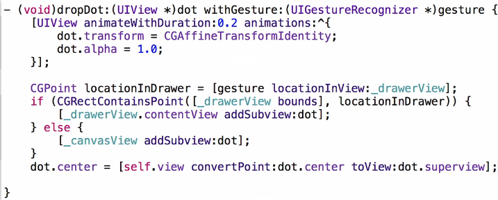
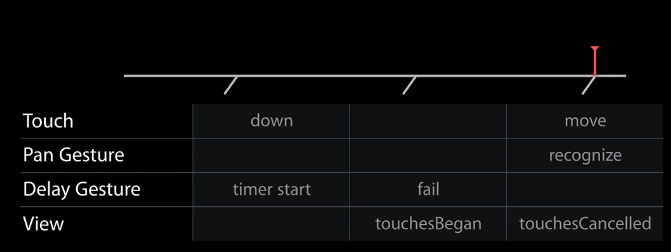
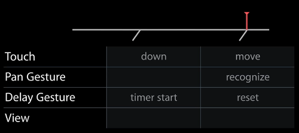
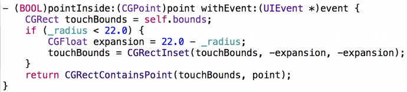

Author: Charles Zhu
Summary: notes for 223
Intro
UIScrollView 是比较重要的控件，每年的WWDC都会有专门的lecture来讲解scroll的新特性或者处理难点。WWDC2014也不例外，主题是 advanced_scrollviews_and_touch_handling_techniques，主要包括：
- Hit testing
- gesture recoginizers
- touch delivery
- ransparent overlayers
- dragging while scrolling
- highlighting objects
下面会按着视频中的demo，一步一步讲解。
transparent overlayers
demo: 仿照搜索页面，添加下拉手势，手势触发出现一Scroll View， 该scroll view 部分遮挡原先的 view
存在的问题：
- 原先的view可以点击，添加了 scroll view后在scroll view没有出现的时候也不能点击 (因为demo中scroll view是一直添加在原先页面上， 通过contentOffset来移动内容，即 transparent overlayer)
- scroll view 禁止 useraction后，下拉手势无法响应
解决之道：
- scroll view 禁止 useraction
- “转交”scroll的pan手势：
[superView addGestureRecognizer:scrollView.panGestureRecognizer]
5.0开始，scroll有了一些手势属性，利用它们可以简化很多实现。
问题进化： 上述方法简单粗暴，因为scroll view上如果需要能接受点击操作呢(这种情况多见)？
histTest:withEvent:
该函数的作用就是检测 view或者哪个view的subview接收event，一般的处理流程：
- check point in our bounds
- return self
- check subview(in reverse order) whether to got the hit or not
需要注意的是在处理subview时的顺序，因为通常总是最上面的view最先接受event。
下图是demo中的view 架构：

从下往上依次是： 父view(黄色，viewcontroller的view)， scrollview(透明色)，containerview(绿色)。
图上的处理流程是：
- viewcontroller接收到event
- view检测subview，即scrollview
- scrollview检测subview，即containerview；如果点击位置在最左边的话，最后检测到的就是scrollview
因此，在这个demo中，只有当view 是containerview时，才需要返回：
- (UIView *)hitTest:(CGPoint)point withEvent:(UIEvent *)event
{
UIView *hitView = [super hitTest:point withEvent:event];
if (hitView == self)
{
return nil;
}
return hitView;
}
在自定义的scroll view中重载 histTest:withEvent:，当 hitView是scroll本身的时候，我们不需要响应event，所以返回 nil，以便通知父view继续寻找下一个子view。
要注意的是，该方法会忽略透明色的view以及禁止useraction的view，因此这里需要开启scroll view的useraction。
接下来实现 点view（dot view）可以接受long press gesture
LongPressGesture
添加LongPressGesture 是为了让 点view 可以随手势移动。直接给 点view添加guesture会有bug，因为默认的gesture在被确认的时候会cancel接下来的手势响应，因此需要设置手势的属性：
longPress.cancelsTouchesInView = NO;
补充下该属性的说明：
default is YES. causes touchesCancelled:withEvent: to be sent to the view for all touches recognized as part of this gesture immediately before the action method is called
LongPress响应的处理，直接上图了：



说明：
- convertPoint:fromView: 适用于坐标在不同view下的切换，这里dot view有可能是从scroll view上的container中转移到 父view
- 手势点击的时候，可能在 点view的边缘处，因此在grab中的animation中通过动画将点击位置转移到中心
接下来： 点击多个 点view同时支持下拉scroll view 当前不支持点击 点view同时支持下拉是因为 点view的longPress和scroll view的pan相冲突了。解决方法很简单，就是实现LongPress的一个delegate，：
- (BOOL)gestureRecognizer:(UIGestureRecognizer *)gestureRecognizer shouldRecognizeSimultaneouslyWithGestureRecognizer:(UIGestureRecognizer *)otherGestureRecognizer
{
return YES;
}
此时的问题是：当longPress 点view，并向下移动时，会触发scroll的下拉，原因在于上述的delegate方法实现的过去粗暴。
Dragging while scrolling
解决上面问题的方法就是在longPress开始的时候：
scroll.panGestureRecognizer.enabled = NO;
scroll.panGestureRecognizer.enabled = YES;
问题发生的原因在于LongPress和Pan是同一个接受者，因此我们在LongPress开始的时候先禁掉Pan的响应，这样当前的手势只会被LongPress处理。紧接着，我们要恢复pan的识别，以避免错过下一次正常手势响应。
新问题：当下拉的手势经过 点view时，点view会高亮一下。
原因在于pan手势经过点view的时候会触发touchBegan:，当系统识别出来是pan向点view发出cancelTouch:的时候已晚矣。
highlighting objects
先看UITableView怎么解决类似问题，当手指点中cell快速滑动时，cell并不会有选中的状态；而当手指点击cell不滑动的时候，cell会呈选中状态。之所以会这样，是因为UIscrollView有默认值为YES的delaysContentTouches的属性。为了更好的理解这种特性，我们需要知道背后都有些什么，发生了些什么。
首先UIscrollView除了 panGestureRecognizer 和 pinchGestureRecognizer， 还有 touchDelayGestureRecognizer，touchDelay的作用就在于：屏蔽event，使其他任何view或gesture都无法响应event。
以点击uitableview cell然后滑动为例，页面上cell会呈选中状态，然后整个tableview滑动，同时选中的cell状态恢复。这其中发生的事情包括：

- 手指点击cell，delay gesture启动，内部释放一个timer
- 手指不动保持一定时间后，timer到点了，delay gesture失效，这时view和gesture可以正常接收event，因此cell接受到touchBegan，开始高亮选中
- 手指滑动时，pan手势接管，cell接受cancel信息，恢复原状态
如果直接滚动cell：

- 第一步同上
- 手指滑动，pan手势接收，这时会重置delay gesture；因为pan先接收了，view不会受到touch事件
因此，解决点view高亮的方法也有了思路：给view添加一个类似scroll view的delay gesture。结合上面2图，我们大致可以了解delay gesture的流程：
- 设置 delaysContentTouches 为YES
- 在touchesBegan中启动timer，在touchesEnded和touchesCancelled中置失败
- timer到点后置状态失败
- 实现一个重置timer的方法
- 初始化的时候，注意target为nil
新问题：点击小物体
Touching Small Objects
还是使用hitTest:withEvent:，重载 - (BOOL)pointInside:(CGPoint)point withEvent:(UIEvent *)event(因为hitTest:withEvent:默认调用 pointInside:withEvent:)，如图：

总结
需要牢记的：
- touch event中：
hitTest:withEvent:是最底层的，控制响应对象 touchesBegan:和 gesture 是较高级别的对touch event的响应- UIScrollView的默认 gesture
最近看过的WWDC视频，过段时间回顾，发现还是受益良多。由此想来还是要把之前看的几期的笔记整理出来，这样方能加深印象。